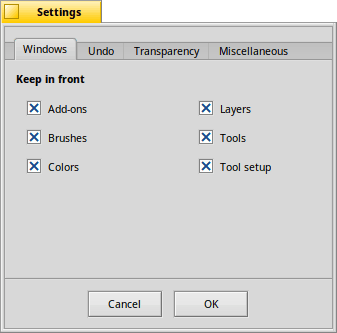
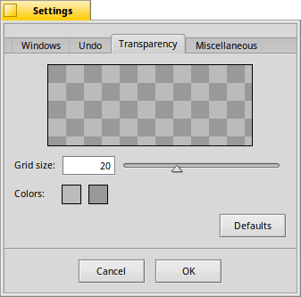
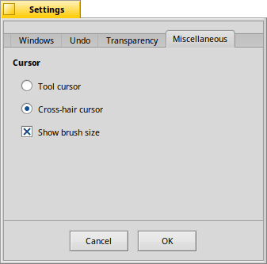

The settings
The settings panel provides a few options, separated into four tabs:
|  |
WindowsWith these checkboxes, you decide which windows to always of, i.e. float above, the canvas. |
UndoDepending on the amount of memory available and size and number of projects and layers you work with, you can set the number of revertable actions to , , or choose and set the number of explicitly. | |
|  |
TransparencyYou can change the of the checker pattern that's used to represent transparency, and also its . |
|  |
MiscellaneousYou can set the mouse pointer to and have a small icon of the active tool beside it, or — to avoid obscuring even a few pixels — set to . draws the outline of the currently set brush around the mouse pointer. A sort of preview where the paint will hit the canvas. |
Back: The menus Next: The other windows